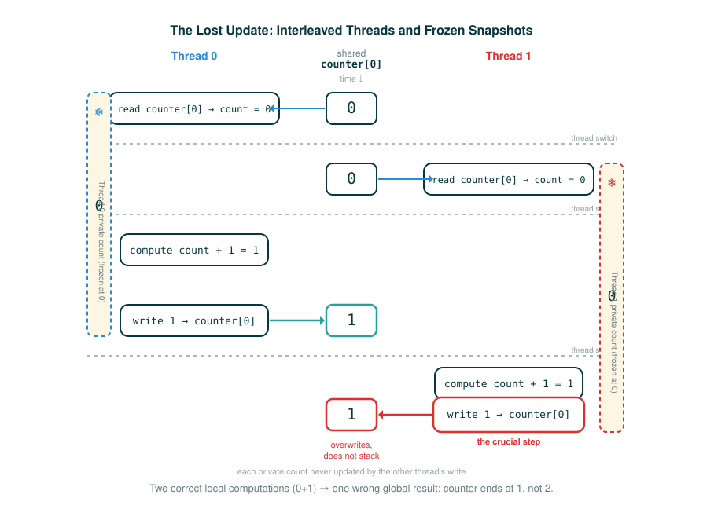

4.8.2 The Problem with Shared State
You have already seen that a program can run more than one thread, and that the interpreter switches between those threads on its own. This lesson is about the single most important consequence of that fact: when two threads touch the same piece of data, the program can produce a wrong answer that no amount of careful single-line reading would predict.
By the end you will be able to do five things. You will explain what shared state is and why it is dangerous. You will say precisely what it means for an operation to be atomic. You will trace the official shared-counter example and show how it can lose an update. You will read a side-by-side interleaving of two threads and point to the exact moment the bug is born. And you will define a race condition well enough to recognize one in code you have never seen before.
The habit this lesson builds is new. Up to now, reading code meant asking "what does the next line do?" From here on, when threads share data, you must also ask "what could run in the middle of this line?"
Two Clerks and One Scoreboard
Picture a scoreboard at a game, currently reading 0, and two scorekeepers, Ada and Bob. A point is scored, and both of them go to update the board. Here is the catch: each one works in three small motions. First they look at the current number. Then they figure out the new number in their head. Then they walk over and write it.
Now suppose the motions get shuffled. Ada looks at the board and sees 0. Before she writes, Bob also looks and sees 0. Ada thinks "0, so the new score is 1" and writes 1. Bob, still holding the 0 he read a moment ago, thinks "0, so the new score is 1" and writes 1 too. Two points were scored. The board reads 1.
Nobody did bad arithmetic. Ada's reasoning was correct. Bob's reasoning was correct. The board is wrong anyway, because each of them acted on a number that went stale the instant the other one wrote. That shuffle, where the answer depends on whose motions happen to overlap, is exactly the shape of the bug in this lesson.
A Slow-Machine Model
To see why a single line of Python can be interrupted in the middle, it helps to deliberately slow the machine down in your imagination.
A line like counter[0] = counter[0] + 1 looks like one motion, but the interpreter does not perform it in one motion. It performs a sequence of smaller operations: it reads the current value out of the list, it adds one to that value, and it stores the result back into the list. The CPython interpreter is allowed to switch to another thread at almost any time, including between those smaller operations. So the right mental model is not "each line happens all at once." It is "each line is a little bundle of tiny steps, and another thread may slip in between any two of them."
This is why the slow-machine view matters. If you imagine the steps stretched out in time, you can ask the new question, where could the other thread cut in, at every gap. The whole danger of shared state lives in those gaps.
Atomicity
The word for "cannot be interrupted in the middle" is atomic.
An operation is atomic if it appears to occur instantly, with no thread switch possible during its evaluation or execution. Only the most basic operations are atomic. Reading a single value out of memory can be atomic. But a compound update like incrementing a counter is not one basic operation. As the source puts it, incrementing a counter requires multiple basic operations: read the old value, add one to it, and write the new value. The interpreter can switch threads between any of these operations.
Hold the distinction sharply. "Atomic" is not about how short the code looks on the page. counter[0] = counter[0] + 1 is short, and it is not atomic. Atomicity is about whether the machine can be interrupted partway through, and a read-add-write is three places where it can.
Follow the Line: Why One Statement Is Three Steps
Take the increment line on its own and walk its tokens. The point of this walk is to make visible that the single statement carries a read, a computation, and a write inside it. In a moment you will see the official code do count = counter[0] to take a snapshot of the shared value; here we look ahead at the line that writes that snapshot back, so count below is that earlier reading, not the live shared number.
counter[0] = count + 1
├─ counter[0] ... the shared slot being written (the target on the left)
├─ = ............ assignment: store the right-hand value into that slot
├─ count ........ this thread's PRIVATE copy of the old value, read earlier
├─ + ............ addition, computing a brand-new number
├─ 1 ........... the amount we are adding
└─ action ....... write (count + 1) back into the shared counter[0]The token that causes all the trouble is count. It is not the live shared value; it is a snapshot this thread took earlier with count = counter[0]. By the time the write on the left actually happens, the shared counter[0] may have changed underneath you, but count will not have noticed. The line faithfully writes back an answer computed from old information.
Follow the Line: How the Two Threads Get Started
One line in that program is doing the work of launching the second thread. Walk its tokens.
# (2)
other = threading.Thread(target=increment, args=())
other = threading.Thread(target=increment, args=())
├─ other .................. name bound to the new thread object
├─ = ...................... assignment
├─ threading.Thread ....... the Thread constructor from the threading module
├─ ( ...................... begins the constructor's inputs
├─ target=increment ....... the function this thread will run (no parentheses: not called yet)
├─ , ...................... separates the inputs
├─ args=() ................ the arguments to pass to increment: none
├─ ) ...................... ends the inputs
└─ action ................. build a thread that will run increment(), bind it to otherThe one token to read carefully is target=increment. There are no parentheses after increment, so it is not being called here. You are handing the function itself to the thread, and the thread will call it later, on its own schedule, once you write other.start(). That "later, on its own schedule" is precisely what lets it overlap with the increment() you run in the main thread on the next line.
A Bridge: The Same Bug With No Threads At All
Before the official failing schedule, here is a smaller example of my own, written so you can run it as ordinary single-threaded code and feel the lost update with nothing hidden. This is not from the source; it is a simplified stand-in that performs by hand the exact overlap a thread switch would cause.
# (3)
counter = [0]
a_read = counter[0] # first "thread" reads the shared value
b_read = counter[0] # second "thread" reads it too, before either writes
counter[0] = a_read + 1 # first writes back its old-value-plus-one
counter[0] = b_read + 1 # second writes back ITS old-value-plus-one
print('count is now: ', counter[0])
Run it and you get 1, not 2. Nothing random happened, because there are no threads here. Both a_read and b_read captured 0 before any write, so both writes store 1, and the second write does not stack on the first, it overwrites it. The official example produces this same outcome, except the dangerous ordering is caused by a real thread switch instead of being written out by hand, which is why the real version is sometimes correct and sometimes not.

The Bad Interleaving
Now the official failing schedule. When the program runs and the interpreter switches threads at the sleep call, this is the sequence of operations the source gives:
Thread 0 Thread 1
read counter[0]: 0
read counter[0]: 0
calculate 0 + 1: 1
write 1 -> counter[0]
calculate 0 + 1: 1
write 1 -> counter[0]Read it top to bottom; that is the order in which the operations actually happen. Thread 0 reads 0. Before Thread 0 can write, the interpreter switches and Thread 1 reads 0 as well, the very same stale value. Thread 0 then computes 1 and writes 1. Thread 1, still holding the 0 it read three steps ago, computes 1 and writes 1, landing right on top of Thread 0's write. The end result is that the counter has a value of 1, even though it was incremented twice.
The hidden mistake is not arithmetic. Both threads do correct local arithmetic, exactly as Ada and Bob each did. The mistake is that each thread acted on a snapshot of the shared value that another thread had already made obsolete.
A Step-by-Step Machine Trace
It is worth slowing the same schedule down one more notch and naming each thread's private count variable, because the lost update lives in those private copies. Each call to increment has its own local count.
- The shared
counter[0]starts at0. - Thread 0 runs
count = counter[0], so Thread 0's localcountis0. - Thread 0 hits
sleep(0), and the interpreter switches to Thread 1. - Thread 1 runs
count = counter[0], so Thread 1's localcountis also0(no write has happened yet). - Control returns to Thread 0. It computes
count + 1, which is0 + 1, and writes1intocounter[0]. The shared counter is now1. - Thread 1 resumes. Its own local
countis still0, untouched by step 5. It computescount + 1, which is again0 + 1, and writes1intocounter[0]. - The shared counter ends at
1. One of the two increments has vanished.
The crucial line is step 6. Thread 1's count did not update when Thread 0 wrote in step 5, because count is a private copy, not a live view of the shared list. Two perfectly correct local computations combined into one wrong global result.
Why Correct Local Thinking Can Still Be Wrong
This is the mental shift the lesson exists to deliver. In an ordinary single-threaded trace, "what does the next line do?" is enough, because nothing else is running. In a parallel trace, that question has a blind spot. You must also ask "what could run between the tiny pieces of this line?"
For the counter, the dangerous gap is between the read and the write. Once a thread executes count = counter[0], its count is frozen at whatever the shared value was at that instant. If another thread writes to counter[0] afterward, the first thread never finds out; it will still write back its frozen-value-plus-one. Local reasoning about a single thread can be flawless and the program can still be wrong, because correctness here is a property of how the threads interleave, not of any one thread read in isolation.
What Makes It a Race Condition
The source gives the precise condition. This problem arises only in the presence of shared data that may be mutated by one thread while another thread accesses it. Such a conflict is called a race condition, and it is an example of a bug that only exists in the parallel world.
Two parts of that definition deserve emphasis. First, it takes shared, mutable data; read-only data or data only one thread touches cannot race. Second, the result depends on timing, which is why these bugs are so cruel to debug. Even with the sleep call, this program sometimes produces a correct count of 2 and sometimes an incorrect count of 1. The interpreter may switch at the wrong time only very rarely, which makes the failure hard to reproduce. A program can pass a test many times and still be wrong, because the unlucky schedule that exposes the bug may show up only once in a great while.
⚠Common Beginner Traps
- Reading
count + 1as something that changescount. It does not. It computes a new number;countitself is unchanged, and the new number only lands somewhere when it is written back with=. Miss this and you will trace the lost update wrong, expecting Thread 1'scountto have advanced when it is still frozen at the value it read. - Assuming the answer must be
2because two increments appear in the code. The code lists two increments, but parallel timing decides the actual order of the underlying machine steps, and a bad order can lose one. - Believing the race always happens. Race conditions are timing-dependent and can be intermittent; the program can be correct on most runs and wrong on a rare one.
- Thinking
sleep(0)is the bug, or that removing it makes the program correct.sleep(0)only encourages the bad schedule so you can see it. The race is in the unprotected read-compute-write, with or without the sleep. - Confusing "short line" with "atomic."
counter[0] = counter[0] + 1is one short line and is not atomic; it is a read, an add, and a write, and the interpreter can switch between them.
✓Check Your Understanding
- Suppose the threads happen to interleave in this luckier order instead: Thread 0 runs
count = counter[0], then Thread 0 runscounter[0] = count + 1, and only after both of those does Thread 1 run its owncount = counter[0]and thencounter[0] = count + 1. What value does each thread'scounthold, and what does the program finally print? - In the official bad interleaving, both threads write
1. Why do they both compute1rather than one of them computing2? - What two conditions does the source require for a bug to be a race condition?
- Why can this program pass a test many times and still be incorrect?
- What does it mean for shared data to be synchronized, and what does that protect against?
Show the answers
- Thread 0's
countholds0(the starting value ofcounter[0]). Because Thread 0 finishes its write before Thread 1 reads,counter[0]is already1when Thread 1 runscount = counter[0], so Thread 1'scountholds1. Thread 1 then writes1 + 1, and the program printscount is now: 2. No update is lost here, because Thread 1 read the value only after Thread 0's write rather than before it. - Each thread first ran
count = counter[0]and captured the shared value0into its own privatecountbefore either write happened. Each thread then computedcount + 1, which is0 + 1. The second write overwrites the first rather than building on it, so neither thread ever sees1as its starting value. - There must be shared data, and that data must be mutated by one thread while another thread accesses it. Without shared mutable data accessed concurrently, there is no race.
- Because the failure depends on the timing of thread switches. The unlucky interleaving that loses an update may occur only rarely, so most runs and most test passes look correct even though the program is not.
- Shared data is synchronized when it is protected from concurrent access, so that only one thread can perform the dangerous read-compute-write at a time. This protects against race conditions, the lost-update class of bug shown by the counter.
§Summary
Shared mutable state is the central hazard of parallel programs. A statement like counter[0] = counter[0] + 1 looks like one motion but is really three, a read, an add, and a write, and only the most basic operations are atomic, meaning uninterruptible. Because the interpreter can switch threads in the gaps, two threads can each read the same old value, each compute the same new value, and each write it back, so one increment silently disappears and the counter ends at 1 instead of 2. A bug like this, where shared data is mutated by one thread while another accesses it and the result depends on timing, is a race condition, and it can be intermittent enough to pass tests yet still be wrong. The cure is synchronization: protecting shared data from concurrent access so the read-compute-write happens under a clear one-at-a-time rule, which the following sections implement in several different ways.
▶Step-Through Checkpoint
Real thread switches are nondeterministic, so no single stepped run can reproduce the race on its own. The block below is a deterministic model: it performs, by hand and in order, the exact overlap that one unlucky thread switch would cause, so you can step through the lost update one statement at a time. Stepping through it draws the environment diagram where the lost update lives: the global frame holds the private snapshots thread_a_read and thread_b_read, both frozen at 0, alongside the shared one-element counter list (the single list both assignments point at) that both writes target, so you can watch the second write to counter[0] land on top of the first rather than build on it. Before you step through it, write down two predictions: the value both thread_a_read and thread_b_read will hold when they are read, and the final number the program prints.
# (4)
counter = [0]
thread_a_read = counter[0]
thread_b_read = counter[0]
thread_a_new = thread_a_read + 1
counter[0] = thread_a_new
thread_b_new = thread_b_read + 1
counter[0] = thread_b_new
print('count is now: ', counter[0])
Step through it and check your predictions. Both thread_a_read and thread_b_read store 0, so both thread_a_new and thread_b_new are 1. The final write lands on top of the first, and the program prints count is now: 1, the same lost-update result the official threaded version produces on an unlucky schedule.